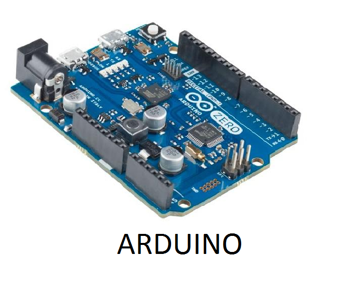

les fonction de l'arduino
un arduino sont des cartes materiellement libre sur lesquelles se trouve un microcontroleur
le microcontroleur peut etre programme pour analyser et produire des signaux electriques,de maniere a effectuer des taches tres diverses comme la domotique se qui veut dire le controle
des appareils domestiques; eclairage,chauffage et porte par exenple comme le pilotage d'un robot et de l'informatique embarquee
c'est une plate forme basee sur une interface entre et sortie simple .Il etait destine a l'origine principalement mais pas exclusivement a la programmation multimedia interactive en vue de spectacle ou d'animation
artistiques ,ce qui explique en partie la descence de son environnement de developpement de processing
